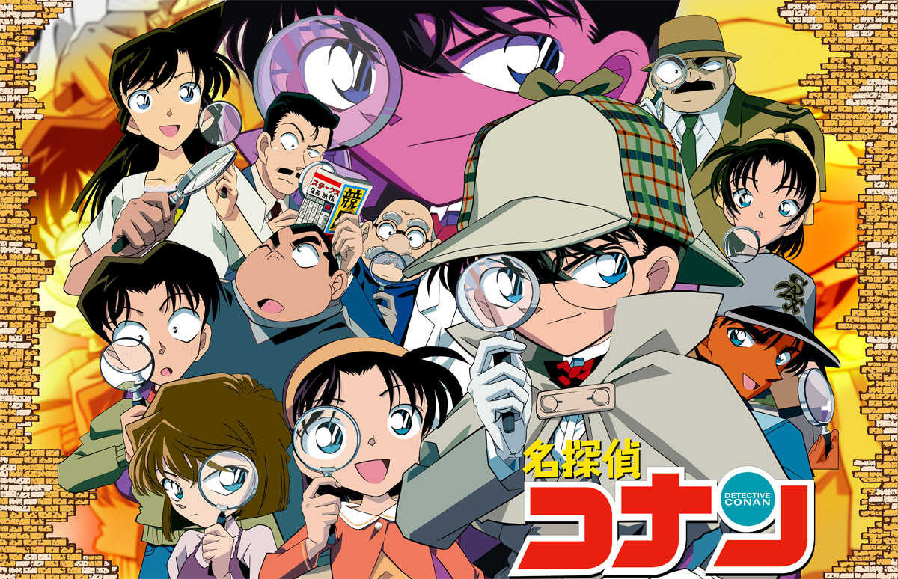

디지털콘텐츠학과
14011188 김찬호
14011204 구수진



평소에 코난을 보면 코난이 지나가는 자리마다 살인사건이 일어나고, 정말 많고 다양한 사건사고가 일상에서 벌어진다는 생각이 들었습니다.
네티즌들 사이에선 코난이 범죄를 부른다는 농담까지 생겼는데, 세계에서 제일 많이 사람을 죽인 만화로 기네스북에 올려야 한다는 말이 나올정도 입니다.
실제로 데이터상 얼마나 많은 사건 사고가 일어나고 있는지 알고 싶어 '명탐정 코난' 이라는 주제를 선정했습니다.
※코난에 등장하는 흥미로운 주제들로 데이터를 정리했습니다※
※아래의 Data는 1화부터 416화까지의 데이터들입니다
1.사망한 이유
2.아가사박사가 사용한 장비 종류 및 횟수
3.등장 인물별 마취 당한 횟수
4.총 스토리 수